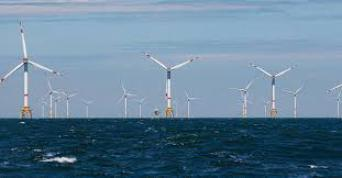

L'humidité
Qu'est-ce que l'humidité
Fondamental : Saturation - Condensation
Lorsque l'air refroidit, il ne peut contenir autant de vapeur d'eau qu'à une température plus haute.
S'il se refroidit assez, cette vapeur d'eau se condense (devient liquide) et se transforme en gouttelettes d'eau.
Le phénomène de condensation est responsable de la formation des nuages, du brouillard, et de la pluie.
Humidité relative
Plutôt que d'indiquer la quantité réelle de vapeur d'eau, on indique la quantité relative ou humidité relative , c'est à dire : la quantité de vapeur d'eau contenue dans l'air sur la quantité de vapeur d'eau maximale possible.
L'humidité relative s'exprime en pourcentage. 100 % correspond à un air saturé en vapeur d'eau (risque de nuage, pluie, brouillard, rosée ou givre), 0 % à un air parfaitement sec.
Lorsque la température diminue, l'humidité relative augmente.
lorsque l'humidité relative atteint 100 %, si la température continue à décroître, la vapeur d'eau se condense.
Fondamental : Visibilité
La visibilité est la distance à laquelle il est possible de distinguer clairement un objet.
Elle est classée en quatre catégories :
bonne : supérieure à 5 milles
médiocre : entre 2 et 5 milles
mauvaise : entre 0,5 et 2 milles
Brouillard : inférieure à 0,5 milles
 | Bonne visibilité |
brouillard |
Types de brouiallard
Il existe 5 types de brouillard :
Advection
Rayonnement
Mélange
Évaporation
Détente
Mesure
La mesure de l'humidité est effectuée grâce à un hygromètre. Il en existe plusieurs type :
à cheveux
électronique
psychromètre à crécelle